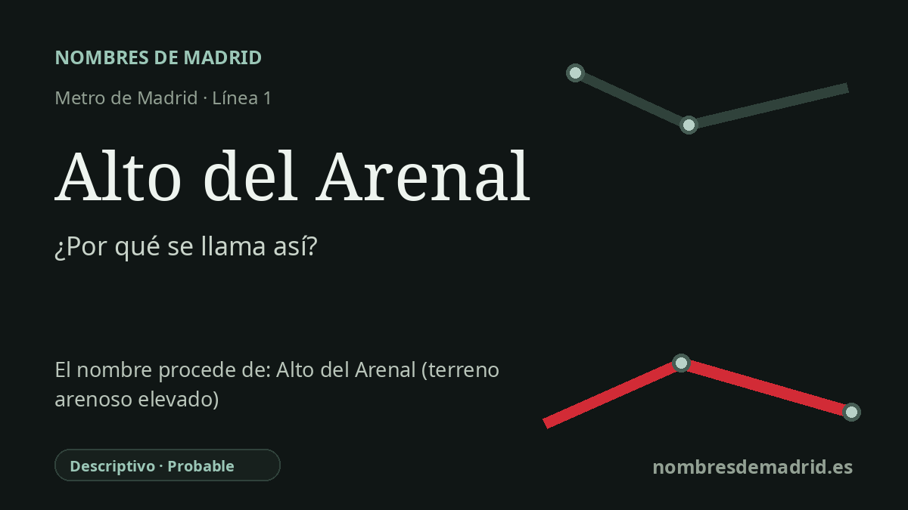

Publicado el · Investigación de Nombres de Madrid · Cómo verificamos cada origen · 8 fuentes consultadas
Respuesta rápida
Alto del Arenal toma su nombre de la cercana Colonia Alto del Arenal, en Puente de Vallecas. Las palabras remiten a la topografía local: un alto es un lugar elevado y un arenal es un terreno arenoso.
La historia del nombre
Alto del Arenal es un nombre de estación arraigado en un topónimo local, no en una persona. La fuente inmediata más probable es la cercana Colonia Alto del Arenal, un ámbito residencial de Puente de Vallecas cuyo nombre ya existía antes de la llegada del Metro. Leído literalmente, el sintagma equivale a algo parecido a 'el terreno arenoso elevado'.
Las dos palabras son vocabulario topográfico común del español. La Real Academia Española define alto, en una acepción relevante, como un sitio elevado en el campo, y arenal como una gran extensión de terreno arenoso. Por eso el nombre es descriptivo: alude al terreno, no a una figura conmemorativa.
La historia urbana que hay detrás del nombre pertenece al Vallecas de mediados del siglo XX. La documentación oficial de la Comunidad de Madrid indica que la Colonia Alto del Arenal fue construida a finales de los años cincuenta y adjudicada en 1961 por la Obra Sindical del Hogar, con 810 viviendas entre casas adosadas y bloques de cuatro plantas. El material de regeneración urbana del Ayuntamiento de Madrid también identifica la colonia como una promoción de la Obra Sindical del Hogar de la década de 1950.
La estación llegó después, durante la prolongación hacia el sur de la línea 1 entre Portazgo y Miguel Hernández. La Comunidad de Madrid fecha esa prolongación el 7 de abril de 1994 y enumera Alto del Arenal entre las tres estaciones nuevas, junto con Buenos Aires y Miguel Hernández. La misma memoria de obra señala terrenos de arenas y arcillas, con presencia de agua en algunos puntos, y explica que el tramo arenoso y húmedo próximo a Alto del Arenal exigió tratamientos de consolidación durante la excavación.
La explicación actual de la ficha acierta, por tanto, en la etimología general, pero falla en una cronología esencial. Alto del Arenal no se inauguró en 2007, sino que forma parte de la línea 1 desde 1994. El contexto de la crisis de vivienda es pertinente, aunque conviene separar la Colonia Alto del Arenal del cercano Poblado Dirigido de Entrevías, que fue un episodio relacionado pero distinto de vivienda social.